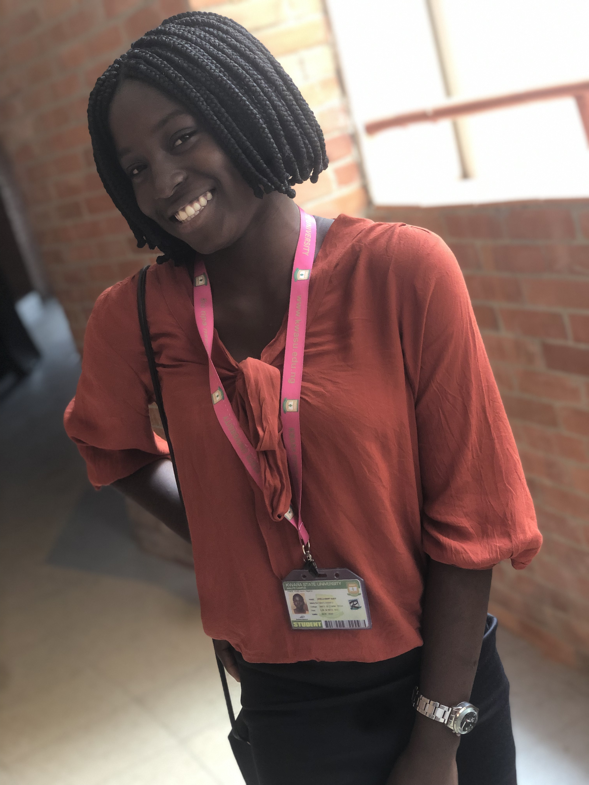

GO TO HOME PAGE

MY ACHIEVEMENT
My name is Ajayi Stella, a student of kwara state university(kwasu), I'm based in ibadan,
oyo state, am born into the family of five. I attended Funmilayo Comprehensive College, Owode,
Apata, Ibadan. My first achievement was when i participated in a 200m race in Obafemi Awolowo
b>Liberty Stadium, where i won a golden medal & i was appreciated by the coach and other officials.
The race was a memorable one for me. It was the first international race that i ever participated in.
Also, being chosen as the Head girl and sport prefect in my school was another achievement for me,
because i did not expect to be given a post not even to be awarded two(2) position (head girl and sport prefect).
THINK BIG empowerment conference was another achievement i can think of, where i participated in various activities
like Quiz, debate, handiwork and other various activites, which at the end i was awarded a certificate.
Also another achievement was gaining admission into kwara state university & also been able to study the
course of my choice.
I'm also hoping to achieve more in future with the guidance of God.
My Page Link